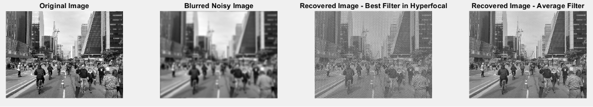

Justification
As part of the MOSAIC project, I contributed to the simulation and processing of images, following a multi-step numerical approach to analyze and optimize the performance of an Exponential Phase Mask.
We first simulated the imaging of an ideal object on the sensor plane, incorporating the effects of light diffraction and noise during propagation. To correct these imaging artifacts, we applied Wiener deconvolution, effectively mitigating the degradation introduced by the optical system. Additionally, we extended our analysis by simulating the optimal form of the Wiener filter under defocus conditions to further refine the phase mask’s performance.
To quantify and optimize the phase mask parameters, we introduced the Mean Squared Error (MSE) as an optimization standard. By adjusting the phase mask parameters, we successfully deconvolved noisy images into clearer representations. Alongside this, we conducted an extensive study on how different phase mask parameters influence imaging performance, demonstrating the validity of our results through graphical analysis.
Further refining our deconvolution approach, we processed a street image using the Point Spread Function (PSF) generated by Zemax and an average Wiener filter-the filter the minimise the MSE for a chosen object distance range. To improve accuracy, we expanded the methodology by incorporating multiple PSFs into an averaged filter and ensured the PSFs were properly centered. We computed an average filter based on nine different PSFs for the cubic phase mask and started comparing the MSE of the blurred and recovered images, considering different levels of defocus
This structured approach allowed us to iteratively improve the phase mask’s performance, correct errors, and gain a deeper understanding of its impact on image quality and deconvolution effectiveness. While some optimization challenges remain, our work provided valuable insights into the interplay between optical system design and image restoration techniques.
Proofs
